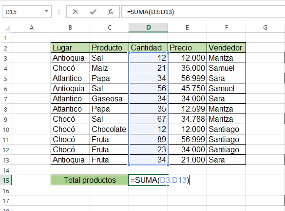

Entrega 1 Periodo 1


Excel - Funcion suma y promedio - Funcion min y max - Funcion contar si - Funcion coincidir - Tips excel
¿QUE ES Y PARA QUE? Excel se distingue de todos los programas ofimaticos porque nos permite trabajar con datos numericos. Con los numeros que almacenamos en Excel podremos realizar calculos aritmeticos basicos y tambien podremos aplicar funciones matematicas de mayor complejidad, o utilizar funciones estadisticas. Excel nos facilita en gran medida el trabajo con numeros y nos permite analizarlos facilmente y generar reportes con herramientas como los graficos y las tablas dinamicas. |
ALGUNAS FUNCIONES |
SUMA Y PROMEDIO
Una de las funciones mas comunes, faciles y de mas uso de Excel, es SUMA, la cual suma el total de valores en un rango de celdas. Esta función solo recibe un argumento: el rango de los valores que se desean sumar. Por ejemplo, la formula =SUMA(A2:A10) suma los valores en el rango de celdas A2:A10, este ejercicio es un ejemplo de una suma de forma vertical.
|  |
MINIMO Y MAXIMOOpuesto a la funcion MAX, esta la funcion MIN, la cual devuelve el valor numerico más pequeño en rango de celdas, es decir, de un conjunto de datos, devuelve el valor menor, su sintaxis es muy paarecida a la sintaxis de la funcion max, solo desbes cambiar la palabra max por la palabra min, es decir, =MIN(D1:D10). |
CONTAR SILa sintaxis de CONTAR SI, es muy sencilla, solo requiere de concentración para indicar correctamente lo que se desea, =CONTAR.SI(E1:E10;"Antioquia"), como se analiza, la sintaxis recibe 2 argumentos, el primero, el conjunto o rango de celdas que se pondran a prueba con la condicion, que es el segundo argumento, y se escribe entre comillas. |
CONCIDIRLa sintaxis de esta funcion, es un poco mas interpretativa, pues recibe 3 argumentos, el primero, el valor que deseamos coincidir, el segundo, el rango de celdas donde se buscara, y el tercero, una condición para la devolucion del dato, un 0 si desemaos un dato exacto, o un 1 si deseamos un dato aproximado, o la respuesta en orden ascendente. La sintaxis se vería así: =COINCIDIR("Cundinamarca";F1:F10;0). |
IMPORTANTE EN EXCEL1. Para iniciar cualquier funcion o escribir una formula, se debe comenzar con el signo =, asi se entiende que se debe realizar una funcion 2. En las funciones, donde hay mas de un argumento, los argumentos se separan con ; |